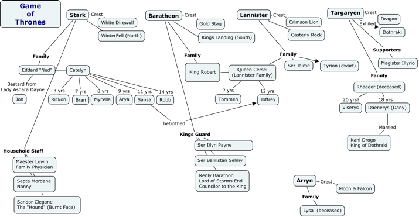

|
Web Communications |
Around the world five times at the drop of a hat. |

In this module you will learn:
- How to think and communicate visually.
- Who created the Web.
- How the Web works.
WII-FM (What's In It - For Me)
We all know that the world is changing. The Web was created in 1990 and it has been a major influence on how we process information as well as how the people of the world communicate. Understanding how this process works will give you clearer view on how you can use the Web to your own advantage.
Complete these Learning Activities:
Total estimated time for this module: 3 hours.
Take the Self-Quiz: WebComm. You can take the self-quizzes as many times as you like.
Be smart and take the self-quiz once each day to learn the material.
Estimated Time: 10 minutes (probably a lot less) each time you take a self-quiz.
Take the Self-Quiz: WebComm.
Read chapter 1 of Basics of Web Design HTML5 and CSS3 - Internet and Web Basics

- How did the Web evolve? Who is this Tim Berners-Lee person?
- What are web standards and why do I care?
- I know what a browser is but what does a server look like?
- Protocols? What's that?
- Make your first web page. Cool beans!
Estimated Time: 1 hour
Read chapter 1 of Basics of Web Design HTML5 and CSS3 - Internet and Web Basics
View the movie: Warriors of the Net- Choose your favorite Internet action hero!
Click here to view on YouTube
Notice how 80% of the movie is happening inside the organization's walls, long before the request gets out on the Internet.
Listen for: "Around the world three times in the drop of hat."
Estimated Time: 15 minutes.
Watch this video Warriors of the Web.
Think and Communicate Visually!
Info-graphics (mind maps) are a great way to see how information fits together. Being able to draw out an idea or concept is an important communication tool.
You don't have to be an artist to get an important idea across. Also, when you draw something it utilizes several parts of your brain. Your motor center coordinating your hand and eye movement and your cortex analyzing the best way to show what you mean.
Watch this video How to Be Double Minded to see why this skill is so valuable.

You can use many types of programs to create an info-graphic. For example: Use PowerPoint, Word or any graphic program such as Gimp, InkScape, PhotoShop, Fireworks, or Microsoft Paint. The Tip-Of-The-Week also has a link to 5 online tools for generating info-graphics.
Estimated Time: 30 minutes.
Watch this video How to Be Double Minded to see why thinking visually is so important.
Work through the Tutorial: How the WWW Works.
Watch the Video - Here is an 8-minute video from my classroom showing how all the pieces of the Web work together. Here is a transcript from the video: transcript of the audio.
Learning Tip: Utilize different areas of your brain by turning on the closed captioning on the video while you watch.Start drawing an info-graphic on a piece of paper as you watch. This will re-enforce the concepts. You will be submitting an info-graphic on how the Web works as part of your first project.
Estimated Time: 15 minutes.
Work through the Tutorial: How the WWW Works.
Being able to find information fast on the Web is a critical skill.
Use Google to find out information about Tim Berners-Lee or Vannevar Bush.
Some example questions you might look for could are included in this Tim Berners-Lee handout. (Just choose one or find out something about Tim Berners-Lee that isn't even on this list.)
You will be posting the link and an executive summary of what you found out on the discussion group as part of your project work.
Estimated Time: 30 minutes (Stay focused.)
Use Google to find out information about Tim Berners-Lee or Vannevar Bush.
Your Graded Assignments For This Module
 Stop!
Stop!
Don't frustrate yourself. Do the Learning Activities BEFORE starting these graded activities.
Ask yourself, "Am I here to learn something I can use... or to just finish the course and get a grade?"
Post what you found about Tim Berners-Lee or Vannavar Bush in the Discussion area of D2L.
Post your message under the topic:Tim Berners-Lee.
Please, no duplicates!
For each item, include a short executive summary of what you discovered as well as the URL so others can go out and read all the details.
Feel free to respond to other people's postings.
Tip: Don't type a URL, simply copy and paste it.
- View the web page you want in a browser.
- Highlight the address in the field at the top (it will start with http:// or https://).
- Use CTRL-C to copy it
- Open up the document where you want to save the URL or web address
- Use CTRL-V to paste the link into your discussion message.
Estimated Time: 30 minutes
Look on the Course Map for the due date for this graded activity.
Take the Graded Quiz: fileManagement
- There will be 10 true/false and multiple choice questions.
- 10 questions - 10 minutes - 10 points
- Feel free to use your book or look stuff up on the Web or try things out on your computer.
- You will have one chance to take the quiz.
- The questions will be from the same database that the self-quiz uses.
- The quiz will be scored automatically and your points shown in your D2L grade book.
Estimated Time: 10 minutes
Look on the Course Map for the due date for this graded activity.
Create an info-graphic showing how the Web works. Have your info-graphic ready to use as part of the Project: Web Page assignment.
This will be submitted as part of your first project that will be due after you finish the module on HTML. Do it now so your info-graphic is all ready to go.
This info-graphic is for you to show your understanding of how files travel across the Web as well as how the Client/Server concept works based on the Learning Activities in this module. It will also demonstrate that you know how to think visually and not just with writing.
- The file should be named: infoGraphic.png
- Make certain the image is type .png so it can be viewed in any browser. MS Word files are not acceptable.
- If you use a specialized info-graphic program, look for an "file/export" or a "file/save as" menu item. Make sure you select the file type before you export the image. You can also take a screen shot of your drawing.
- The image should be at least 480x640 pixels in size and no larger than 600x800 pixels
- Show the 8 steps that a file travels through on its trip to the server and back to the browser.
- Use different colored arrows to show the request and then the response
- Your info-graphic will be worth 10 points as part of Project: Web Page
Estimated Time: 30-60 minutes
Look on the Course Map for the due date for this graded activity.

Your Tip-Of-The-Week
(Click on the lightbulb to reveal the tip.)
5 Online Info-Graphic Tools You Can Use
Here is a list of info-graphic tools that you can use: 5 Great Info-graphic tools.
What's Next?

Create your first web page. Move on to Module: HTML.